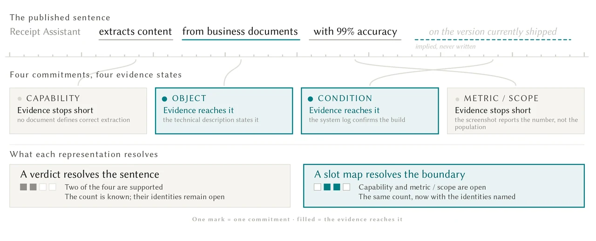
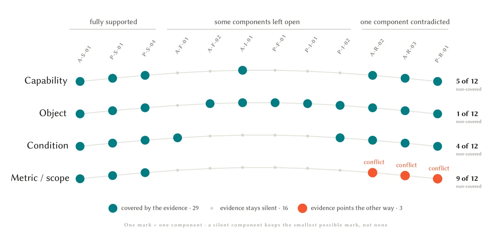
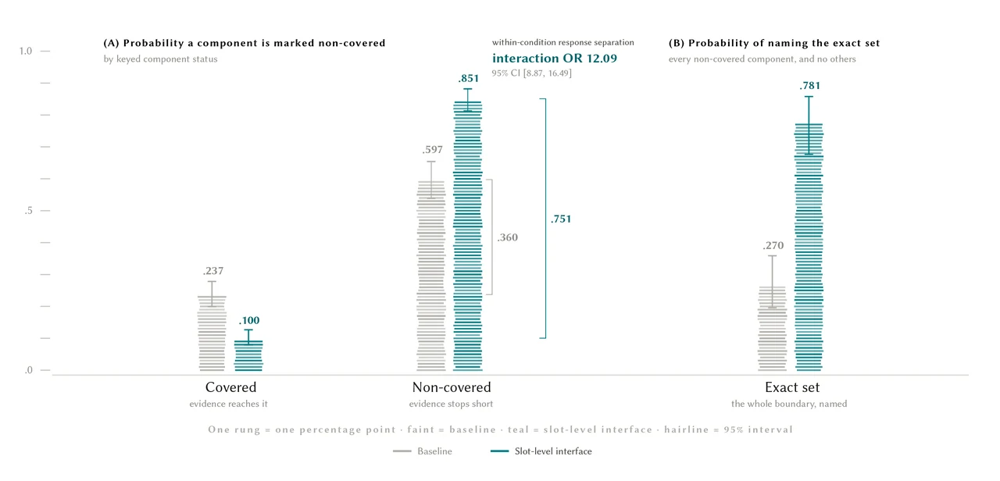
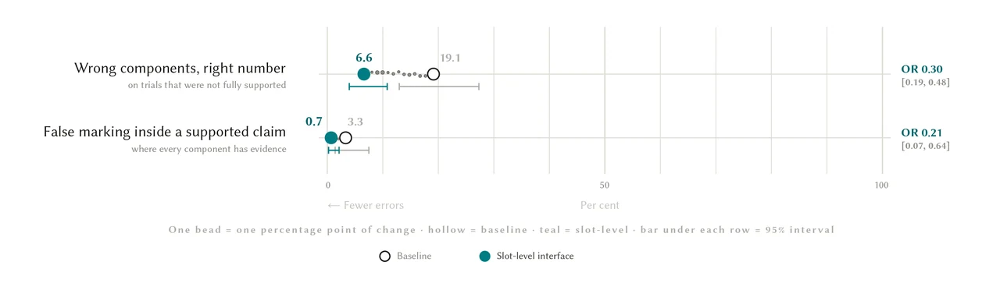

Evidence Boundaries
On this page
INQ–γ: Evidence Boundaries
Making Evidence Boundaries Legible: A Slot-Level Interface for Evaluating AI Product Claims
Research projectHuman–computer interaction, Evidence interfaces, AI product claims
Introduction
An AI product claim can combine several promises in one sentence. A whole-claim verdict may be accurate while leaving readers unsure which promises the evidence actually supports. This project investigates evidence-boundary legibility: making the relationship between a claim’s individual commitments and their evidence states inspectable.

Figure 1 / A product claim, four commitments, and the boundary of available evidence.
Concept
The interface separates a claim into four slots: capability, object, condition, and metric/scope. Each receives a covered, missing, or contradicted state. It retains the original sentence, global verdict, summary, and evidence packet, while placing component states beside their commitments and relation labels on evidence cards. The aim is to show the complete pattern of support, including what the evidence does establish.
Study
A controlled comparison involved 111 participants evaluating 12 fictional AI product claims, producing 5,328 component judgments. Both conditions received the same claim, global status, count summary, and evidence packet. The slot-level condition additionally displayed the component map and evidence-relation labels. Component states were assigned as part of the study materials; allocation records do not establish verified random assignment for the full sample.

Findings
Participants identified the complete non-covered set on 31.4% of Baseline trials and 72.3% of slot-level trials. These are observed rates; the figure below reports model-adjusted estimates. Slot-level responses also showed higher sensitivity and specificity, with fewer localization errors and fewer false marks within fully supported claims.

Figure 4 / Model-adjusted component identification and exact-set accuracy; intervals show 95% confidence.

Figure 5 / Localization errors and false marking within fully supported claims; model-adjusted estimates.
The component map remained visible during the task. The finding concerns identification while using that display, rather than independent verification, later recall, or transfer. Differences in whole-claim status and action accuracy were smaller and imprecisely estimated. The design implication is specific: making local evidence states visible can help readers locate the boundary of support while inspecting a composite claim.